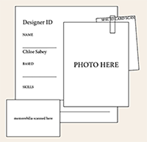

Who Am I?
Thank you for checking out my video! I am originally from San Diego, but moved to the Bay Area before middle school. I am majoring in Visual Communication Design, with a minor in Creative Writing, at SFSU. I am a multidisciplinary artist and designer who got my start with illustration and painting. I moved on to collage work and digital art after a summer program at Otis College of Art and Design in Los Angeles.
I dream of designing book covers or landing some kind of design work in the literary world. My love of books, art, and music drives my passion to create art in many forms. I am really excited to start my coding journey in my Web Design course. Starting as a complete beginner, I hope to get some fundamental skills in HTML and CSS. I hope to one day utilize these skills to code bigger projects for myself and clients!
CHLOE.COM's 2026 FALL FAVORITES
Song: Bleed by George Clanton
Drink: Iced oat latte with brown sugar syrup, and house made whip on top, from Andytown
another item:bhbcsjbdcsjcd
another item:ebjbdjwebjbedwh
CONTACT ME:
(650) 339-8448